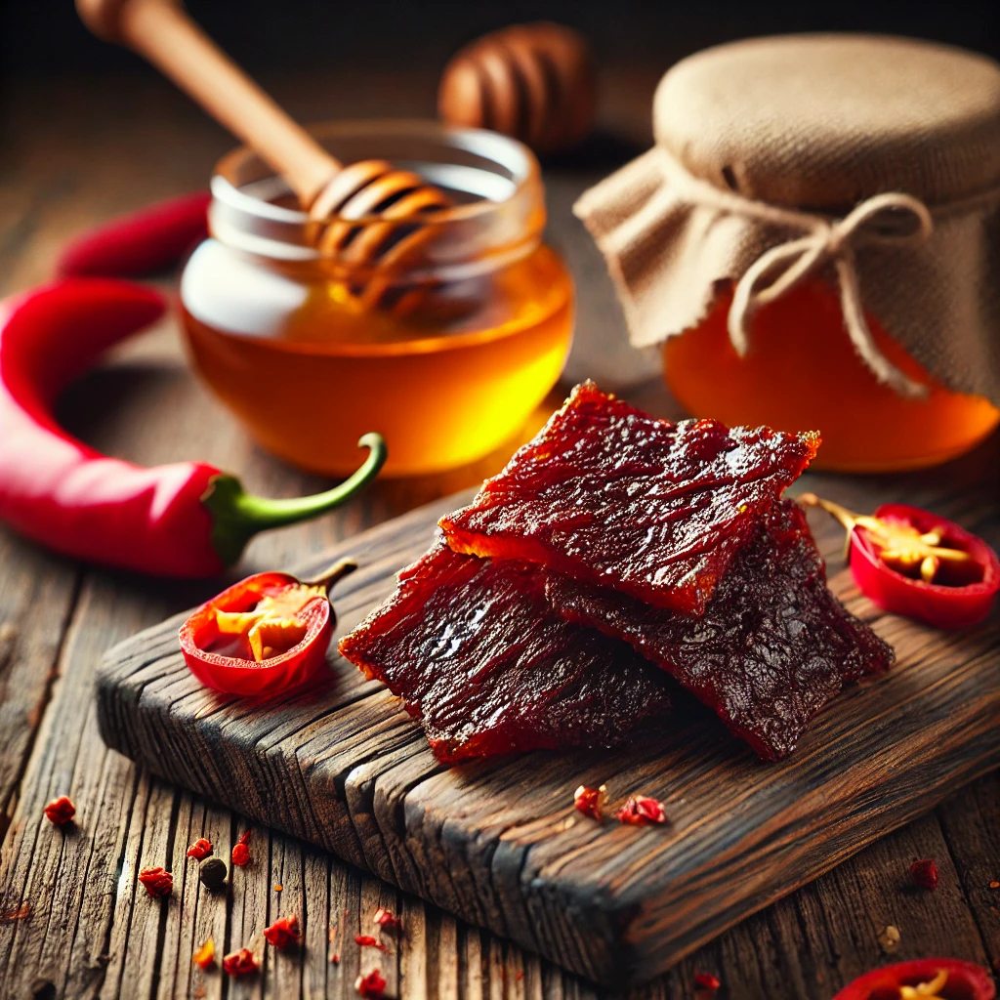
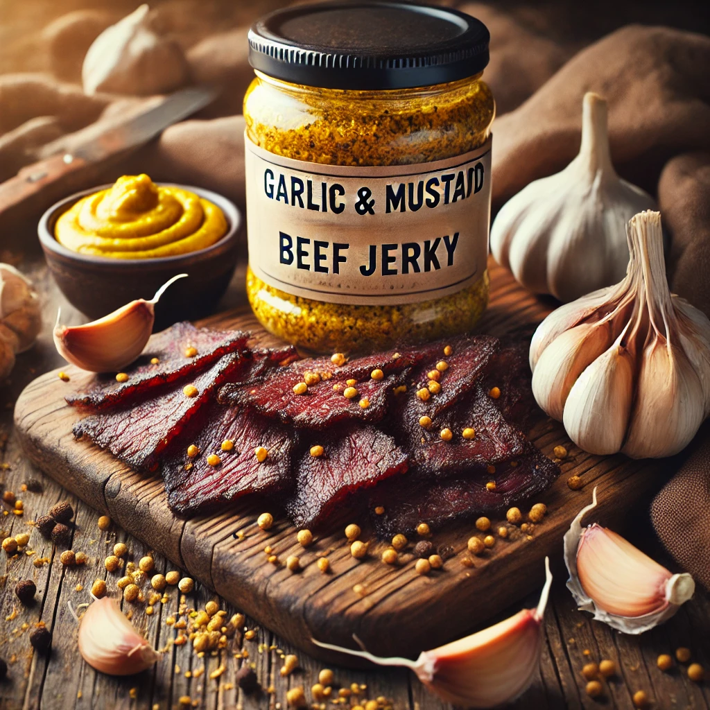
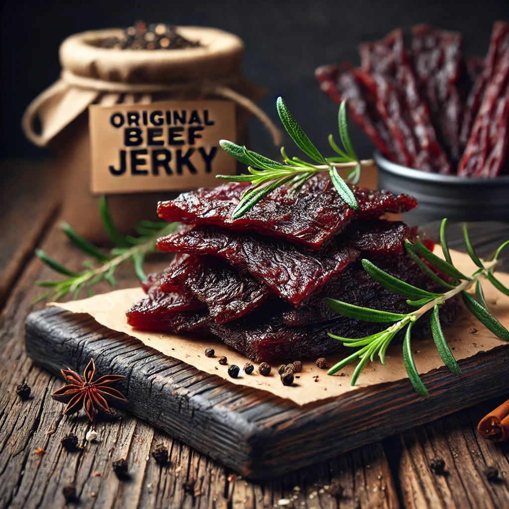

Sweet & Spicy
Eine perfekte Mischung aus Süße und Schärfe, die jede Geschmacksknospe begeistert. Perfekt für Fans von würzigem Genuss.
Mehr erfahrenEine perfekte Mischung aus Süße und Schärfe, die jede Geschmacksknospe begeistert. Perfekt für Fans von würzigem Genuss.
Mehr erfahren